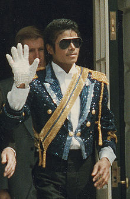

Hampstead School is getting political! When school elections roll around, Nicole decides to run for class president, and Grace volunteers to be her campaign manager . The only problem is, Grace starts treating the election like one of her football matches, and instead of focusing on Nicole, Grace starts making the election all about beating opponents. Can the English Roses help draw Grace in before the final ballots are cast?
 (August 29, 1958 – June 25, 2009) was an American singer-songwriter, dancer, actor, choreographer, poet, businessman, philanthropist and record producer. Referred to as the King of Pop, he is recognized as the most successful entertainer of all time,[1] as well as one of the most influential.[2][3] His unrivaled contribution to music, dance and fashion,[4][5] and a much-publicized personal life, made him a global figure in popular culture for over four decades.